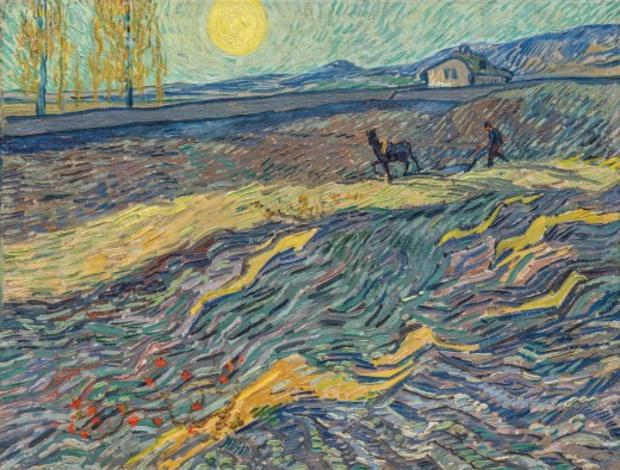
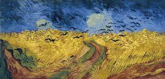
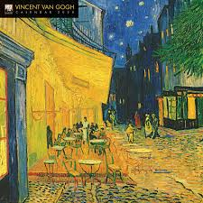

Vincent Willem van Gogh Zundert, 30 de marzo de 1853-Auvers-sur-Oise, 29 de julio de 1890) fue un pintor neerlandés, uno de los principales exponentes del postimpresionismo. Pintó unos 900 cuadros (entre ellos 43 autorretratos y 148 acuarelas) y realizó más de 1600 dibujos. Una figura central en su vida fue su hermano menor Theo, marchante de arte en París, quien le prestó apoyo financiero de manera continua y desinteresada. La gran amistad entre ellos está documentada en las numerosas cartas que se intercambiaron desde agosto de 1872. De las 800 cartas que se conservan del pintor, unas 650 fueron para Theo; las otras son correspondencia con amigos y familiares

Van Gogh fue esencialmente autodidacta. Desde joven tuvo inclinación hacia el dibujo. Su primer trabajo fue en una galería de arte. Más tarde se convirtió en pastor protestante y en 1879, a la edad de 26 años, se marchó como misionero a una región minera de Bélgica, donde comenzó a dibujar a la gente de la comunidad local. En 1885 pintó su primera gran obra, Los comedores de patatas. En ese momento su paleta se componía principalmente de tonos sombríos y terrosos. La luz y la preferencia por los colores vivos por la que es conocido surgió posteriormente, cuando se trasladó al sur de Francia, consiguiendo su plenitud durante su estancia en Arlés en 1888.
La calidad de su obra fue reconocida solo después de su muerte, en una exposición retrospectiva en 1890, considerándose en la actualidad uno de los grandes maestros de la historia de la pintura. Influyó grandemente en el arte del siglo XX, especialmente entre los expresionistas alemanes y los fauvistas como Matisse, Derain, Vlaminck y Kees Van Dongen.
Falleció a los 37 años por una herida de bala de pistola; aún no se sabe con seguridad si fue un suicidio o un homicidio involuntario. A pesar de que existe una tendencia general a especular que su enfermedad mental influyese en su pintura, el crítico de arte Robert Hughes cree que las obras del artista están ejecutadas bajo un completo control; de hecho, el pintor jamás trabajó en los periodos en los que estaba enfermo

Desde muy joven mostró un carácter difícil y un temperamento fuerte. Tras abandonar los estudios y después de un año en Zundert, van Gogh empezó a trabajar en 1869, a la edad de 16 años, como aprendiz en Goupil & Co. (más tarde Boussod & Valadon), una importante compañía internacional de comercio de arte de La Haya de la que su tío Vincent fue socio.
Cuatro años después fue trasladado a Londres para suministrar obras de arte a los comercios del lugar y fue allí donde tuvo un primer contacto con Eugenia, hija de Úrsula Loyer, patrona de la pensión donde se hospedó. Se enamoró de ella, pero la chica estaba comprometida y lo rechazó. En 1874, un año después de su estancia en Londres, pasó las vacaciones en familia en Helvoirt y confesó su malestar por Úrsula. Vivió aislado, leyendo libros religiosos y perdiendo el interés por su trabajo
Establecido en 1880 en Bruselas hizo amistad con el pintor neerlandés Anthon van Rappard. Se inscribió en la Academia de Bellas Artes donde estudió dibujo y perspectiva. En esta época realizó esbozos y dibujos basados en las pinturas de Jean-François Millet, representando campesinos y mineros, modelos de la vida cotidiana, y pintándolos muy realistas y con tonalidades oscuras
